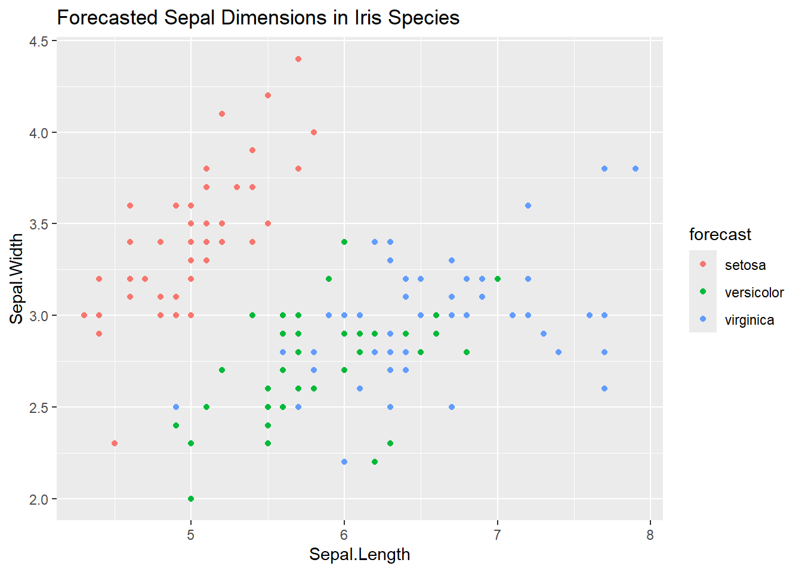

[1] setosa setosa setosa setosa setosa setosa
Levels: setosa versicolor virginicaMastering the Arcane: Advanced RMarkdown for Magical Data Science
Welcome to the next chapter in our exploration through the Enchanted Forest of Data, where the path becomes less trodden and the magic, more profound. As we delve deeper into the arcane arts of RMarkdown, we uncover tools and spells capable of transforming the complex into the captivating, the overwhelming into the understandable. Our journey begins with the crafting of living narratives through Dynamic Documents, a realm where data and text dance in responsive harmony.
Dynamic Documents: Crafting Living Narratives
In the heart of the Enchanted Forest lies a grove known as Dynamic Documents, where the trees whisper to those who listen, changing their tales with the winds of inquiry. Here, RMarkdown is not just a scribe but a sorcerer, casting documents that breathe, react, and engage with the reader in a living conversation.
The Essence of Interactive Documents
Dynamic documents bring your data analysis to life. Unlike static reports, these documents invite the reader to interact, explore, and even alter the narrative’s course, leading to personalized insights and discoveries. This magic is woven through the integration of R Markdown with shiny, an R package that creates web applications directly within your RMarkdown files.
Casting the First Spell: Shiny in RMarkdown
To begin, let us conjure a simple interactive plot using R’s built-in mtcars dataset. This spell requires the shiny package alongside RMarkdown, transforming static observations into dynamic explorations.
---
title: "Interactive Exploration of the mtcars Dataset"
output: html_document
runtime: shiny
---
::: {.cell}
::: {.cell-output .cell-output-stderr}
```
Warning: pakiet 'shiny' został zbudowany w wersji R 4.4.2
```
:::
::: {.cell-output-display}
```{=html}
<div class="form-group shiny-input-container">
<label class="control-label" id="xvar-label" for="xvar">Choose an x-axis variable:</label>
<div>
<select id="xvar" class="shiny-input-select"><option value="mpg" selected>mpg</option>
<option value="cyl">cyl</option>
<option value="disp">disp</option>
<option value="hp">hp</option>
<option value="drat">drat</option>
<option value="wt">wt</option>
<option value="qsec">qsec</option>
<option value="vs">vs</option>
<option value="am">am</option>
<option value="gear">gear</option>
<option value="carb">carb</option></select>
<script type="application/json" data-for="xvar" data-nonempty="">{"plugins":["selectize-plugin-a11y"]}</script>
</div>
</div>
```
:::
::: {.cell-output-display}
```{=html}
<div class="shiny-plot-output html-fill-item" id="out814268119fbbb99d" style="width:100%;height:400px;"></div>
```
:::
:::
This incantation embeds a Shiny application within the RMarkdown document, allowing readers to select different variables from the mtcars dataset for the x-axis of a scatter plot, dynamically updating to reflect their choice. The document thus becomes a living entity, responsive to the reader’s curiosity.
The Power of Responsiveness
The real magic of dynamic documents lies in their ability to adapt — the figures, tables, and analyses they contain can change based on user input. This interactivity transforms the reader’s role from passive observer to active participant, deepening their engagement and understanding.
Crafting Your Own Living Narratives
Creating dynamic documents in RMarkdown opens a realm of possibilities:
- Educational Tools: Develop interactive tutorials that adapt to the learner’s pace and interests.
- Data Exploration Interfaces: Allow users to explore datasets, applying filters and viewing different statistical analyses or visualizations based on their choices.
- Personalized Reporting: Generate reports that adjust their content based on user-specific parameters or selections.
In the Dynamic Documents grove, the narrative is not fixed but fluid, changing with each reader’s journey through the data. This chapter marks the beginning of our advanced exploration into RMarkdown, where the documents we craft are not just read but experienced.
As we venture forth from the grove of Dynamic Documents, our path through the Enchanted Forest of Data takes us toward even more complex magics and functionalities. Each step reveals new capabilities of RMarkdown, promising to transform not only our data but also the stories we tell with it. Stay with us as we continue to unravel the mysteries and master the arcane art of advanced RMarkdown.
Parametrized Reports: Tailoring Your Magic
Beyond the dynamic interactions of living documents lies the realm of Parametrized Reports, a powerful sorcery that allows a single document to transform and adapt, creating personalized narratives for each reader. This magic empowers your documents to respond not just to interactions within the document itself but to inputs specified even before the document is conjured.
The Spell of Customization
Parametrized reports leverage the YAML front matter in an RMarkdown document to define parameters that can be dynamically passed to the document at runtime. This enables the creation of a single, flexible template that can generate a multitude of reports tailored to specific needs, questions, or audiences.
Crafting a Parametrized Potion
Let’s create a simple spell that demonstrates the power of parametrization, using R’s built-in iris dataset. We will allow the reader (or the sorcerer preparing the document) to choose which species of iris to focus on in the report.
---
title: "Parametrized Report on Iris Species"
output: html_document
params:
species:
label: "Select a Species:"
value: "setosa"
input: select
choices: [setosa, versicolor, virginica]
---
::: {.cell}
:::


The Alchemy of Parametrization
The true power of parametrized reports lies in their alchemy, turning the base metal of data into the gold of personalized insight. This capability is particularly potent in environments where reports need to be generated for different segments, conditions, or criteria regularly. Applications include:
- Educational Assessments: Generating student-specific reports based on performance and learning needs.
- Business Intelligence: Tailoring financial or operational reports to different departments or managerial levels.
- Research and Development: Creating detailed analysis reports for different study groups or experimental conditions.
Weaving Your Spells
To master the art of parametrized reports, one must learn to weave together the elements of RMarkdown with the parameters defined in the YAML header, creating documents that are not just informative but transformative. The spellbook of RMarkdown, combined with the sorcerer’s insight into the needs of their audience, can conjure documents that speak directly to the reader, offering a personalized journey through the data.
The Alchemy of Language: Polyglot Potions in RMarkdown
In the diverse ecosystem of data science, wisdom is not confined to a single language. Just as a master alchemist draws upon various elements to create powerful potions, a skilled data sorcerer must harness multiple languages to uncover the deepest insights. RMarkdown, with its polyglot capabilities, allows us to write in multiple languages within a single document, creating a rich tapestry of analysis and insight.
Speaking in Tongues: R, Python, SQL, and Stan
RMarkdown’s enchantment lies in its ability to understand and execute code in languages beyond R, including Python for machine learning, SQL for database queries, and Stan for statistical modeling. This multilingual feature is enabled through the magic of the knitr package and its engines, which interpret and execute the code chunks written in these languages.
Conjuring Python Magic
To weave Python spells within an RMarkdown document, one must first invoke the Python engine. This is done by specifying the language in the code chunk header. Here’s how you can summon a Python serpent to perform a simple incantation:
---
title: "Parametrized Report on Iris Species"
output: html_document
---
::: {.cell}
```{.python .cell-code}
# A simple Python spell
import numpy as np
np.random.seed(42)
np.random.normal(0, 1, 5)
```
::: {.cell-output .cell-output-stdout}
```
array([ 0.49671415, -0.1382643 , 0.64768854, 1.52302986, -0.23415337])
```
:::
:::
SQL Incantations for Data Summoning
For those who draw their power from the vast databases of the realm, SQL incantations allow direct communication with these sources. By specifying an SQL engine and a connection to your database, you can query data directly into your document:
SELECT * FROM magical_creatures WHERE habitat = 'forest';Stan: Divining the Future
Stan, a language for statistical modeling and Bayesian inference, allows sorcerers to peer into the future, making predictions and uncovering hidden truths. Integrating Stan with RMarkdown, one can document and share complex statistical models:
```// {stan output.var="model"}
// A Stan model for divination
data {
int<lower=0> N;
real y[N];
}
parameters {
real mu;
}
model {
y ~ normal(mu, 1);
}The Polyglot’s Codex: Best Practices
Integrating multiple languages into an RMarkdown document bestows great power but also requires careful consideration:
- Environment Harmony: Ensure that your computational environment is properly configured to support all the languages you intend to use, with necessary packages, libraries, and database connections in place.
- Language Flow: Maintain a logical flow between code chunks of different languages, especially when passing data or results from one language to another.
- Narrative Cohesion: The inclusion of multiple languages should enhance, not hinder, the narrative flow of your document. Use each language to its strengths, ensuring that the story you tell is cohesive and comprehensible.
Automating Insights: Enchanted Scrolls and Parallel Prophecies
In the deeper reaches of the Enchanted Forest of Data, sorcerers and data alchemists alike seek ways to expedite their spellcasting. The creation of reports, a task both mundane and mystical, can be arduous when done by hand for each inquiry or audience. Yet, with the ancient arts of automation and the clever harnessing of parallel processing spirits, we can conjure multiple reports at once, each tailored to different ends, without sacrificing the personal touch that makes each scroll unique.
The Spell of Automation
Automation in RMarkdown is akin to conjuring a series of intricate spells in quick succession, each perfectly executed and precisely aimed. By utilizing the rmarkdown::render() function, we can automate the generation of reports from a single template, passing different parameters or datasets to create a multitude of narratives from a single source of power.
Creating an Automated Alchemy Lab
Consider a scenario where we wish to generate customized reports for each species in the iris dataset. Instead of laboriously crafting each report by hand, we employ the following incantation:
# Define the species to report on
species_list <- unique(iris$Species)
# Automate the creation of species-specific reports using loop
# This code generate report with species name like "Versicolor Report.html"
# basing on template file "Species_Report.Rmd"
library(rmarkdown)
for (species in species_list) {
render("Species_Report.Rmd",
output_file = paste(species, "Report.html"),
params = list(species = species))
}Parallel Prophecies: Conjuring Many at Once
While automation accelerates our work, invoking parallel processing allows us to transcend the bounds of time further, casting multiple spells simultaneously across the threads of reality. The doParallel package calls forth spirits of computation from the ether, enabling us to perform our automated tasks in parallel, thus drastically reducing the time required to generate a multitude of reports.
Summoning the Parallel Familiars
To harness the power of parallel processing for our reports, we first must summon and bind the computational spirits:
library(doParallel)
registerDoParallel(cores = detectCores())
# A list to hold our parallel tasks
tasks <- list()
# Populate the tasks with report generation spells
for (species in species_list) {
tasks[[species]] <- function() {
render("Species_Report.Rmd", output_file = paste(species, "Report.html"), params = list(species = species))
}
}
# Command the spirits to execute the tasks in parallel
foreach(task = tasks) %dopar% {
task()
}
# Using this approach you can not only generate 3, 4 report one after another
# but also have 3 or even more reports at once on neighbouring cores.Best Practices in Parallel Spellcasting
When wielding such potent magic, caution must be exercised:
- Mind the Limits: Understand the limits of your computational familiars. Summoning too many can overwhelm your system, leading to chaos and disarray.
- Task Segregation: Ensure that tasks suitable for parallel execution are independent, lest their magics interfere with one another, corrupting the data and sowing confusion.
- Resource Allocation: Be mindful of the resources required for each task, allocating your computational spirits where they are most needed to avoid inefficiency and waste.
Beyond the Veil: Custom Formats and Templates
In the enchanted world of RMarkdown, the magic extends beyond mere content generation, venturing into the realm of custom formats and templates. This domain is where data sorcerers tailor not just documents but artifacts of knowledge, meticulously crafted for those deemed worthy to gaze upon them.
The Craft of Custom Formats
Custom formats in RMarkdown allow us to elevate our reports into presentations and documents that transcend the mundane, marrying the precision of data science with the finesse of graphic design. This union ensures that our artifacts are not merely consumed but experienced, leaving an indelible mark on the beholder.
Enchanting with LaTeX and HTML/CSS
For adepts of the LaTeX path, customization lies in the complex weave of commands and packages that dictate the document’s layout, style, and structure. For the HTML/CSS wizards, their craft involves stylesheets and scripts, enchanting documents to dance and dazzle on digital canvases.
The Lore of Templates
Templates in RMarkdown act as the ancient grimoires from which countless reports are conjured. They provide the blueprints from which documents of various forms can emerge, each adhering to the aesthetic and structural edicts laid out by the template’s creator.
Crafting Your Own Template
The creation of a custom template is akin to charting a map of unexplored lands. It demands foresight into the journey that others will undertake through your document, ensuring clarity, highlighting wonders, and cautioning against pitfalls.
- For LaTeX adepts, crafting a template might involve designing a
.texfile that lays out the document’s overall look, feel, and structural guidelines. - HTML/CSS conjurers might create a set of web templates and stylesheets, dictating the visual presentation of content in web browsers.
The Power of Personalization
The essence of utilizing custom formats and templates lies in their capacity to personalize the storytelling experience. By shaping documents that resonate on both a visual and structural level, data scientists ensure that their insights are not just comprehended but deeply felt, fostering a profound connection between the narrative and the audience.
- Branding: Incorporating organizational or personal branding into reports reinforces the identity and authority of the content.
- Accessibility: Designing with accessibility in mind guarantees that insights are accessible to a broad audience, regardless of individual challenges.
- Engagement: The creation of visually appealing documents captivates the audience’s attention, enhancing engagement with the material presented.
As we conclude our foray into the realm of custom formats and templates, we’re reminded that the art of data science extends beyond uncovering insights — it’s about sharing those insights in a manner that is both informative and inspiring. Our exploration of RMarkdown’s advanced functionalities continues to reveal tools and techniques that empower us to illuminate data’s hidden truths with knowledge, creativity, and style. The path ahead beckons with untold potential for those brave enough to traverse it.
The Grand Library of Extensions: Packages that Enhance RMarkdown
Within the vast halls of the Grand Library, each book, scroll, and arcane artifact represents an R package designed to augment the power of RMarkdown. These packages enable sorcerers of data to weave richer tales, incorporating interactive elements, complex layouts, and multimedia content into their documents, transforming them into living, breathing entities that captivate the audience’s imagination.
Bookdown: Crafting Tomes and Manuals
The bookdown package is a powerful spell for those seeking to compile their insights into comprehensive books or lengthy reports. It extends RMarkdown to support the creation of multi-chapter documents, complete with cross-references, citations, and unique formatting options, turning a collection of analyses into a cohesive narrative.
Blogdown & Distill: Scribing for the Web
For the modern data storyteller, the web is a vibrant canvas for sharing insights. The blogdown and distill packages empower sorcerers to publish their findings as interactive websites or blogs, seamlessly blending code, results, and narratives in a format that’s accessible to a global audience. With these tools, the presentation of data becomes an interactive journey, inviting readers to explore, discover, and learn.
Xaringan: Conjuring Interactive Presentations
When the time comes to share wisdom in the halls of academia or the chambers of commerce, the xaringan package summons presentations that transcend the mundane. Built on the powers of web technologies, it allows for the creation of dynamic, interactive slideshows that engage and inform, turning every presentation into an enchantment.
Pagedown: Scrolls of the Printed Realm
Even in an age of digital wonders, the need for printed documents persists. The pagedown package bridges the worlds of web and print, enabling the creation of beautifully formatted PDFs, reports, and letters directly from RMarkdown, ensuring that the magicof data can be captured in a form that’s tangible and permanent.
The Art of Choosing Your Extensions
In the Grand Library, the sheer number of available packages can be overwhelming. The key to harnessing this wealth of resources lies in choosing the right tools for the tale you wish to tell. Consider the audience, the medium, and the message of your narrative when selecting your extensions, and remember that the most powerful magic is that which serves the story.
A World of Possibilities
As we emerge from the Grand Library, our satchels heavy with new knowledge and our minds alight with possibilities, we realize the journey through the advanced realms of RMarkdown is not just about mastering a tool — it’s about unlocking a world of storytelling potential. With these extensions at our fingertips, we can craft documents that not only inform but inspire, engage, and transform.
Conjuring the Future: Predictive Modelling and Machine Learning in RMarkdown
As data sorcerers, our quest for knowledge leads us inevitably toward the future, seeking to divine the unseen and prepare for what lies ahead. RMarkdown, with its versatile magic, offers a crystal ball through which the mists of uncertainty part, allowing us to glimpse the potential outcomes of our actions and decisions.
The Crystal Ball: Integrating Predictive Models
Predictive modelling and machine learning — these are the spells and incantations that allow us to peer into the future, using the data of the past and present to forecast what has yet to come. RMarkdown integrates seamlessly with R’s vast array of predictive modelling and machine learning libraries, enabling us to embed these powerful analyses directly within our documents.
—- markdown — yaml title: “Parametrized Report on Iris Species”
output: html_document

This incantation, a simple example using the caret package and the irisdataset, demonstrates how RMarkdown can serve as a medium for not only documenting our predictive endeavors but also for sharing these foresights, weaving them into the narrative of our data-driven tales.
Visualizing the Path Ahead
Beyond mere prediction, the true art lies in interpreting and visualizing these forecasts, turning raw numbers into insights that can be understood and acted upon. RMarkdown’s integration with visualization libraries allows us to conjure vivid, compelling visuals that illuminate the predicted trends and patterns, making the future not just known, but seen.

The Art of Future-Crafting
Crafting predictions within RMarkdown documents transforms the role of the data scientist from mere analyst to oracle, offering a blend of science and storytelling that engages the audience with what might be, rather than just what is. This forward-looking perspective is essential for strategic decision-making, policy development, and personal planning.
A New Dawn
As we conclude this chapter, the dawn of a new day breaks over the Enchanted Forest of Data. Armed with the predictive powers of RMarkdown, we are no longer mere passengers on the journey through time but navigators, steering toward futures we have foreseen and shaped with our own hands.
Our exploration of the advanced capabilities of RMarkdown, from the crafting of dynamic, interactive documents to the weaving of predictions into the fabric of our narratives, reveals a tool of unparalleled depth and versatility. With each chapter, we uncover new layers of possibility, new magics to master, and new stories to tell.
The journey through the realms of data is unending, and the mysteries it holds are boundless. But with RMarkdown as our guide, we move forward with confidence, ready to face the challenges of tomorrow and illuminate the path for those who follow.
As we conclude our expedition through the advanced functionalities of RMarkdown, it’s clear we’ve journeyed far from where we began, crossing from the realm of mere documentation into the vast and varied landscape of dynamic, interactive, and predictive storytelling. We’ve explored the depths of custom formats, the intricacies of polyglot programming, and the power of parallel processing, each step revealing new ways to enrich our narratives and share our insights.
This guide, “Mastering the Arcane: Advanced RMarkdown for Magical Data Science,” has not only unveiled the robust capabilities of RMarkdown but has also inspired us to think differently about data storytelling. The journey through RMarkdown’s advanced features — from dynamic documents and parametrized reports to the integration of predictive modeling — demonstrates the platform’s incredible versatility and power to transform raw data into compelling narratives that inform, persuade, and inspire.
Yet, as with all journeys through enchanted realms, the path does not end here. The world of data science is ever-evolving, with new spells to learn, new territories to explore, and new stories to tell. As sorcerers of data, our quest for knowledge and mastery is unending, fueled by curiosity and the relentless pursuit of insight.
Let this exploration serve as both a foundation and a beacon, guiding your way as you delve deeper into the mysteries of data and the art of storytelling. May the magic of RMarkdown empower you to illuminate the unknown, to reveal truths hidden within data, and to share the wonder of discovery with the world.
The adventure continues, and with RMarkdown as your companion, the possibilities are as limitless as your imagination.